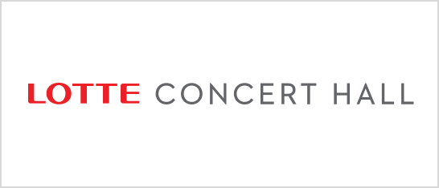
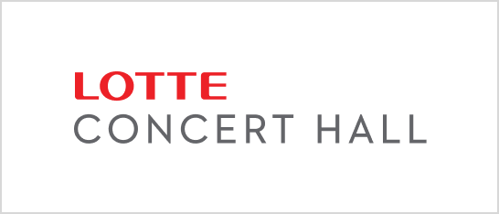
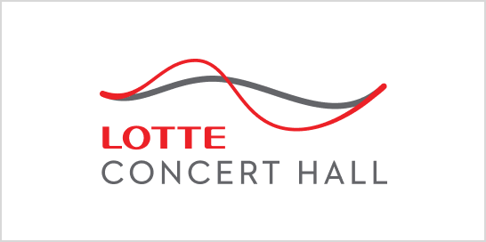
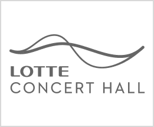
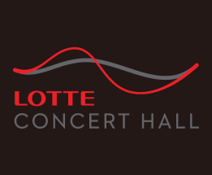
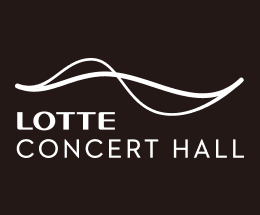
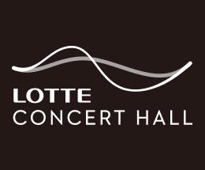

- database 풍요로움 Enrichment
- breastfeeding 친밀감 Intimacy
- music_note 조화 Harmony
- language 동시대의 Contemporary
- brand values
- 롯데콘서트홀은 음악이 사람들을 하나 되게 하는 강력한 힘이 있다고 믿습니다. 「음악으로 하나되는 곳」 에서 출발한 롯데콘서트홀은 최고의 인프라와 음악을 통해 삶을 더욱 풍요롭게 하고 사람들을 하나 되게 하며 행복한 사회를 만들어 나가고자 합니다.
- symbol & concept
- 롯데콘서트홀 심볼마크는 음악을 통해 연주자와 관객, 기업과 고객이 어우러지는 동적인 에너지를 음악적 선율의 모티프로 시각화했습니다. 2016년 8월, 새롭게 태어난 롯데콘서트홀은 클래식 전용 공연장이라는 정통성을 형상화한 부드러운 2개의 라인과 모던한 서체의 조합을 통해 현대적이고 조화로운 감각의 이미지를 전달하고자 합니다. 심볼마크의 곡선이 만들어내는 운율을 시각화하여 관객이 경험하게 될 최상의 음악적 체험과 감동을 섬세한 라인 그래픽으로 표현합니다. 또한, 국내 최초의 움직이는 로고 형태로 음악의 생동감 넘치는 에너지를 강조하여 일관성과 다양성을 함께 가진 21세기의 새로운 브랜드를 선보입니다.
- Logo Color
- 롯데콘서트홀의 컬러 시스템은 롯데 그룹의 메인 컬러인 LOTTE Red와 이와 잘 어울리는 무채색 계열의 컬러를 서브 컬러로 선정하여 고급스러우면서도 은은한 세련미를 표현합니다. LOTTE Cool Gray는 롯데 그룹 기존의 사업과 다른 사회공헌 사업으로서의 대표성 및 차별성을 고려한 색으로, 세련됨과 중용(Balance)의 의미를 상징합니다. 롯데콘서트홀의 고품격 이미지와 음악을 통해 삶의 밸런스를 맞추고, 서로 하모니를 이루는 이미지를 표현하는 색상입니다. 롯데콘서트홀의 로고 색상은 다양한 아이템과 매체에 사용되므로 일관되고 적합하게 사용되어야 합니다.
Logo Type
- 
- 
Primary
- 
- 
- 
- 